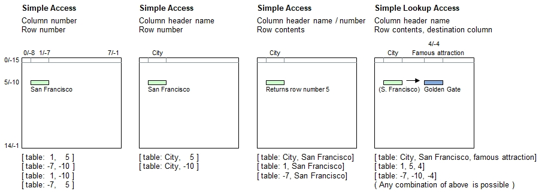

Introduction
The simple table access is one of the four basic access methods where this one accesses exactly one cell in the table.
Syntax for Full Table Specification
The table must be referenced inside brackets using a combination of literals and/or numerals. These may be constant strings and numbers or expressions providing literals and numerals.
| [ | Table Name | : | Simple Column Specifier | , | Simple Row Specifier | ] |
|---|---|---|---|---|---|---|
| Must be a literal | - Header name, or | - Matching contents (literal), or | ||||
| - Positive column number, or | - Positive row number, or | |||||
| - Negative column number | - Negative row number |
Syntax for lookup access (Choose column, folowed by the row, and pick up data from a different column):
| [ | Table Name | : | Simple Column Specifier | , | Simple Row Specifier | , | Simple Column Specifier 2 | ] |
|---|---|---|---|---|---|---|---|---|
| Must be a literal | - Header name, or | - Matching contents (literal), or | - Header name, or | |||||
| - Positive column number, or | - Positive row number, or | - Positive row number, or | ||||||
| - Negative column number | - Negative row number | - Negative row number |
Principle

Programming examples
table load( table, "Examples\Cities.csv");
echo( [ table: 1, 5 ] );
echo( [ table: -7, -10 ] );
echo( [ table: 1, -10 ] );
echo( [ table: -7, 5 ], new line );
echo( [ table: City, 5 ] );
echo( [ table: City, -10 ], new line );
echo( [ table: City, San Francisco] ); // Exception to rule: Returns row numbers
echo( [ table: 1, San Francisco] );
echo( [ table: -7, San Francisco], new line );
echo( [ table: City, San Francisco, Famous attraction] );
echo( [ table: 1, 5, 4] );
echo( [ table: -7, -10, -4] );Output - Consider travelling
San Francisco
San Francisco
San Francisco
San Francisco
San Francisco
San Francisco
5
5
5
Golden Gate
Golden Gate
Golden Gate